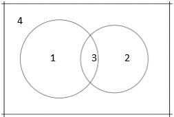
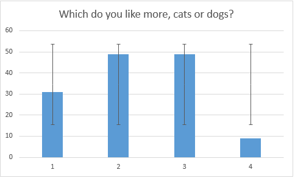
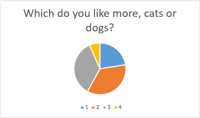

Date: June 1st, 2018
Weather: Sunny
Name: Jenny, Mint
According to common sense we might think that women will tend to like cats more than dogs. But is that true? To test out the credibility of this statement, we made a survey on our friends in our we-chat contact to test whether true. To collect our data, we sent a question that asks whether she likes cats or dogs to each woman in our we-chat contact. The result overturns the original hypothesis amazingly. We find out that the proportion of women who like cats is smaller than the proportion of women who like dogs.
It is said that women like cats more than dogs, for cats are always cleaner and more sensitive than dogs, which shows that cats have similarities with some characteristics of female. We are curious about whether the statement is true. The purpose is either to prove that statement is correct or to overturn this statement.
A lot of people believe that cats can better fascinate people compare to dogs, for cats are just like female that they’re clean. Some study shows that even some habits of cats are like female. However, no research has been done to prove this claim. (Female like cats better)
A research about cats show that, compare to dogs, cats are more similar to female. For example, Cats have stronger self-awareness. They do not obey all the instruction of its owner (like dogs), which is just like female. Also, cats’ cleaner compare to dogs. Many people think cats’ elegant, and these adjective are also used to describe female. People are always fascinated by things that are similar to them, so cats attract female a lot.
Another research show that, because dogs also hunt with male and cats always stay at home with female in the ancient time, so it is obvious that female like cats better than dogs and prefer hold cats at home.
Our null hypothesis is that the proportion of female who like cats better is larger than the proportion of women who like dogs better. To collect the data, we made up a question as follow:
Our population of interest is female. To obtain the data in an easiest way, we sent the question above to all female friends in our we-chat contact. After the data was fully collected, we summarized the results into 4 categories and collected the data.
The number of questions we sent is 188, and we only got 138 responses. Among those responses, only 80 responses are useable to us. It’s because those who give 3 or 4 as a response is not the type of people that have inclination to either cats or dogs. We did calculations on those 80 response. So our sample size is 80. In this sample, 31 people said that they like cats better.
Our theoretical hypothesis looks similar to this Venn-Diagram. The bigger gibbous represents people who choose the first choice and the smaller one represents people who choose the second choice. We expected the bigger gibbous’ area is greater than the smaller gibbous.
The data we collected is shown as a bar chat below. The lines colored in black are error bars to show the standard deviation.
The following pie chart is to show the proportions of people who chose four different answers.

P = the proportion of female who will choose cat while comparing which they like more, dogs or cats
P = 0.5
P0 = 31/80 = 0.388
H0: P1 = (>) 0.5
Ha: P1 < 0.5
Q: Hypothesis testing
S: Sample data
T: Categorical, 1 variable
N: 1 sample
Base on the QSTN, we will use z-test to make the significance test
Check:
The sample is randomly selected and it’s representative.
nP0 = 31 > 10
n(1 – P0) = 49 > 10
Confidence interval: 95%
α = 0.05
p-value = 0.022 < 0.05
Communicate Results:
p-value < α
∴Reject H0
Based on the sample data, we are not convinced that the proportion of female who like cats more is greater compare to the proportion of female who like dogs more.
In order to prove or reject the claim about whether the claim that females like cats better than dogs is true, we designed a question and sent it to females in our we-chat contact. After we collected data, we did the significance test base on the result. We used the hypothesis testing method called z-test to calculate whether the p-value is smaller than 0.05. Because our p-value is 0.022, which is smaller than 0.05, the null hypothesis (Females like cats better than dogs) is rejected.